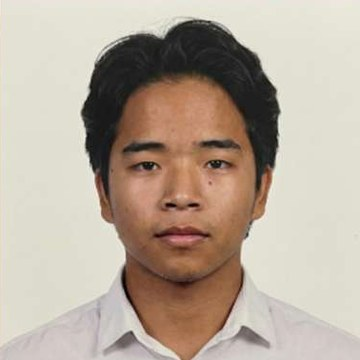
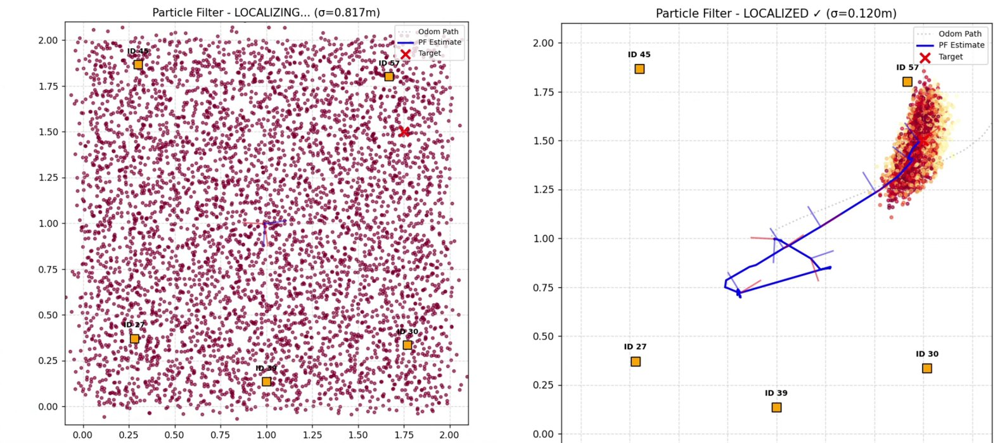
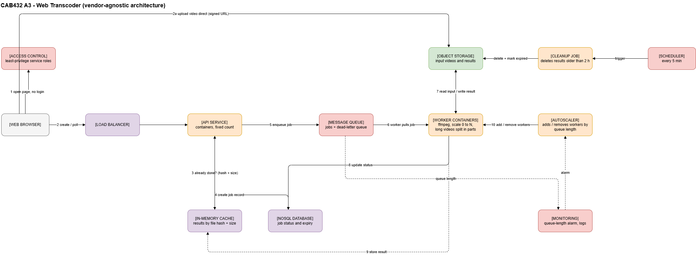
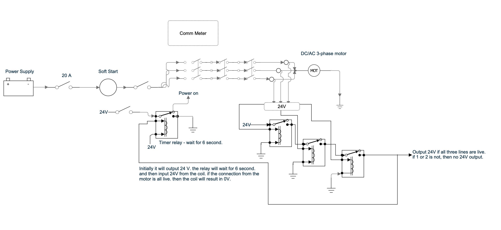
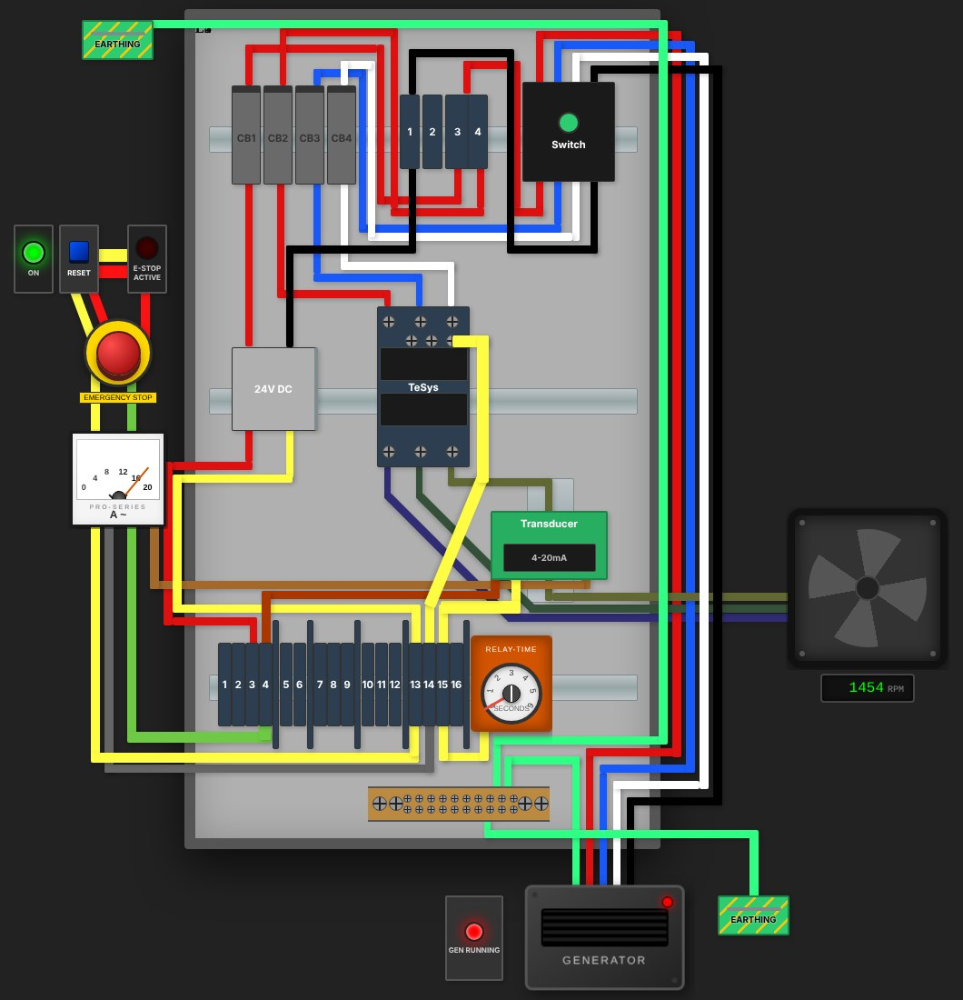

Vangboei Laithang
From power systems to perception and the cloud.
I'm an Electrical Engineering (Honours) graduate from QUT, with minors in Robotics and Software Engineering. My work spans relay-logic control circuits, business apps on Microsoft Power Platform, camera–LiDAR perception for autonomous vehicles, harmonic analysis of grid-connected solar inverters and containerised AWS services. I'm looking for graduate engineering roles anywhere in Australia, including defence.
Software Developer Intern
Jul – Oct 2025 Queensland Department of the Environment, Tourism, Science and Innovation · Dutton Park, QLD- Built a Microsoft Power Apps app for the water pollution monitoring team, with live search, forms that auto-fill from a Location ID, and separate view, add, edit and delete modes.
- Moved the team's SQL data into Dataverse and built Power Automate flows to keep it in sync. Cut the flow's run time to under 10 minutes by separating the source and output tables, and checked all 27 mapped fields against the original data.
- Added an approval workflow with role-based access, so edits from field staff wait for an administrator's sign-off before they go live.
Electrical Engineering Intern
Nov 2025 – Mar 2026 Unidus Community Conference Centre · Willawong, QLD- Designed a 24 V fail-safe relay-logic circuit that detects open-circuit wiring faults on a three-phase motor, simulated it in Falstad, then simplified it from three monitoring lines to one after design review to save cost and enclosure space.
- Carried out electrical audits of power outlets, lighting and emergency lighting, and compared the findings against as-built records.
- Compared three vendor proposals to replace an ageing solar inverter and add battery storage, and handled contractor quotes for facility repairs.
Team Member
Oct 2026 – Present Coles · Brisbane, QLD- Night fill and trading-hours shifts: stocking to deadline overnight and serving customers during the day, including handling difficult situations calmly.
Bachelor of Engineering (Honours), Electrical
Queensland University of Technology · 2023 – 2026
Second Class Honours, Division B. Minors in Robotics and Software Engineering. Honours project on detecting flooded roads for autonomous vehicles.
- Perception and computer visionYOLO detection, semantic road segmentation, LiDAR projection
- Power electronics and power qualityPV inverters, harmonics, filter design in Simulink
- Cloud and softwareAWS ECS Fargate, ALB, S3, DynamoDB, Bedrock, Docker
- Control circuits and embedded24 V relay logic, fault detection, motor protection
Languages and tools I work with.
Selected work.
Honours research, university projects and what I build in my own time.
Autonomous Vehicle Perception: Detecting Flooded Roads
A self-driving car has to spot floodwater early, know whether it is on the road, and know how far away it is. Water is hard to sense: it reflects the LiDAR's laser away and leaves gaps in the point cloud, and a camera alone gives no distance. I built a camera–LiDAR pipeline on QUT's Flooded Road Environments Dataset (FRED).
A lightweight segmentation network (YOLO26n-sem, 1.6 million parameters) learns the drivable road, and a YOLOv8n detector, tuned with a 50-trial Weights & Biases sweep, boxes each flood. A flood is kept only if enough of its box sits on the road, so water beside the road is ignored. Its distance is read from the projected LiDAR points in a small circle on the road just below the box, because the water itself returns almost no points.
Harmonics of a 1.5 MW Grid-Connected PV Inverter
Studied the harmonic distortion a 1.5 MW solar inverter injects at a 33 kV point of common coupling, designed a harmonic filter, and assessed the effect of harmonics on insulation life. Modelled in MATLAB/Simulink and written up as an IEEE-format paper.
Live run: the particle cloud (left) collapses onto the robot as it sees the beacons, then it drives to the target.

Before and after: particles spread over the whole arena at the start (σ = 0.82 m), then gathered on the robot once localised (σ = 0.12 m), with the estimated path in blue. Click to enlarge.
Particle Filter Localisation on a Real Robot
The robot starts with no idea where it is. I spread thousands of particles evenly across a 2 m × 2 m arena, then updated them from wheel odometry and the robot's camera sightings of numbered beacons. Particles that disagree with what the camera sees die off, and the rest close in on the robot's true position.
In the run shown, the particle spread shrinks from about 0.8 m to 0.12 m and the filter reports the robot as localised. The robot then uses its estimated position to drive to a target marked on the map.
An 11-minute 1080p video is cut into 4 parts and converted in parallel while the workers scale up.

Architecture. Click to enlarge.
Auto-Scaling Cloud Video Transcoder
A web app that converts any uploaded video to H.264 at its original quality. Videos upload straight to object storage through a signed URL, an API service behind a load balancer queues each job, and ffmpeg worker containers on AWS ECS Fargate pull jobs from the queue.
The workers scale from zero to many based on queue length, so nothing runs while it's idle. Long videos are split into parts and converted by several workers at once, failed jobs go to a dead-letter queue, repeat uploads are served from a cache, and a scheduled job deletes results after two hours.
In the demo, an 11-minute 1080p video is split into four parts with six workers running, and non-video files are rejected with a clear message.

First design: three cascaded monitoring relays, one per phase. Click to enlarge.

Interactive enclosure mock-up (work in progress). Click to try it.
Fail-Safe Phase Monitoring for a Three-Phase Motor
A 24 V relay-logic circuit that catches an open-circuit wiring fault on a critical three-phase motor before it can damage the equipment. After power-on, a timer relay waits 6 seconds for the motor to start, then the monitoring relays check the phase lines. The circuit outputs 24 V only while all three lines are live. If any line drops, the output is lost and the fail-safe trips.
I simulated the logic in Falstad and presented the design at fortnightly reviews. The first version used a separate monitoring line for each phase, as shown. After review, I simplified it to a single monitoring line and detector, which cut components, cost and space in the enclosure while meeting the same safety requirements.
To plan the enclosure, I also built an interactive browser mock-up of the panel: breakers, contactors, a TeSys motor starter, the 24 V supply, the relay timer, terminal blocks, an ammeter and a 4–20 mA transducer. Hold the switch for 6 seconds and the circuit latches and the motor runs. Press the e-stop and it shuts down until it's reset.
Let's talk.
I'm available for graduate engineering roles from early 2027 and happy to relocate within Australia.